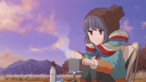
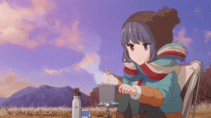

Anime
I also enjoy watching different genres of anime! Most of the animes that I enjoy are in the genre of "Slice of Life".
Some of my favorites include:
- K-On!
- Bocchi the Rock!
- Yuru Camp
- Girl's Last Tour
- Steins Gate
 

(bocchi the rock)